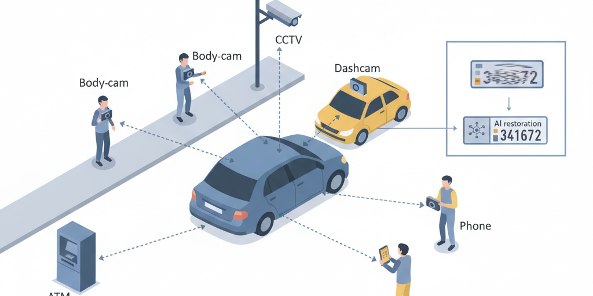
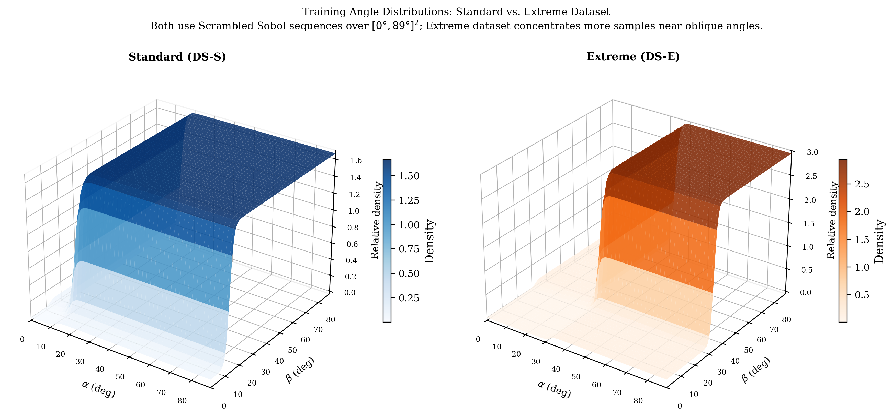
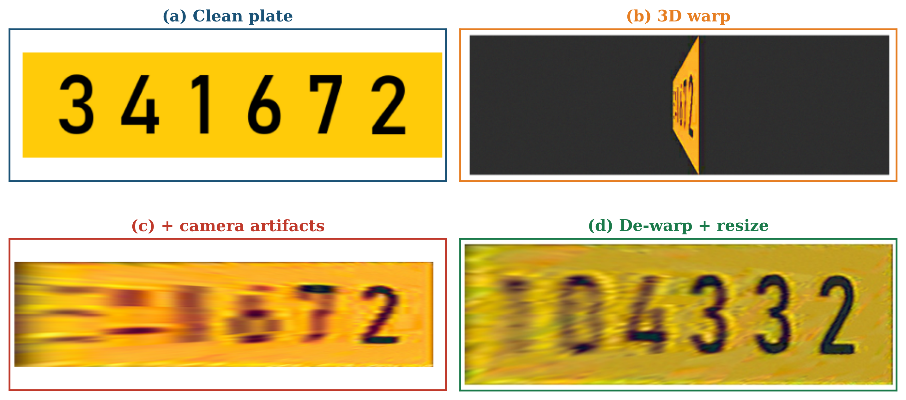
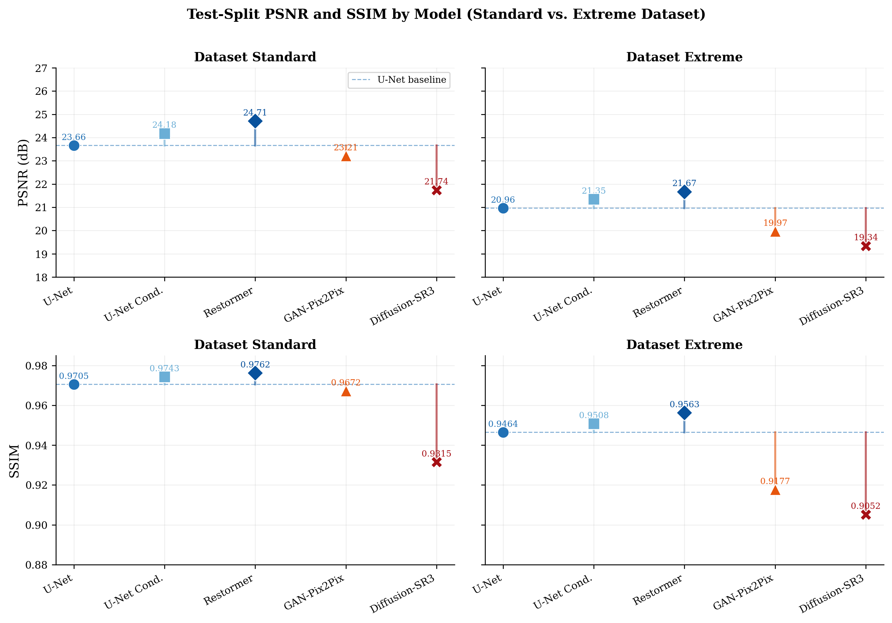
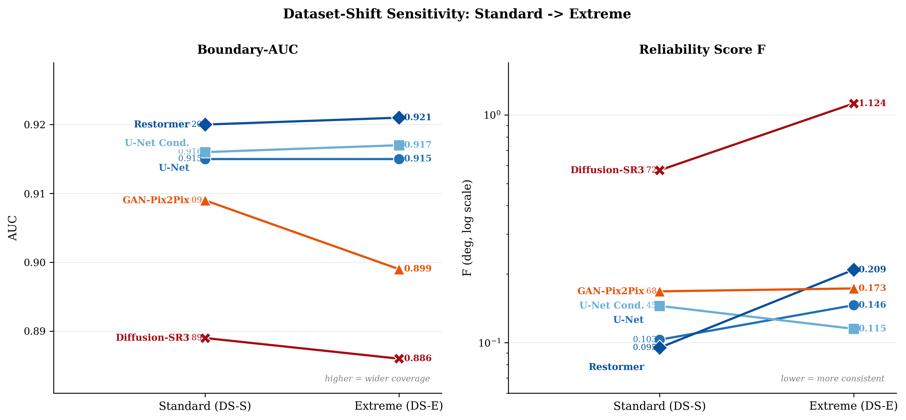

Modern urban environments are saturated with imaging sensors deployed for purposes entirely unrelated to vehicle identification. ATM machines continuously record transaction environments; law enforcement and security personnel carry body-worn cameras; vehicles are equipped with dashboard cameras logging every journey; pole-mounted surveillance sensors monitor public spaces; and smartphone cameras ubiquitously document everyday scenes. None of these devices is calibrated or positioned for license plate recognition (LPR), yet each may inadvertently capture a vehicle of investigative or operational interest. Recent advances in deep learning image restoration have fundamentally changed what is extractable from such imagery: models can now recover structured information from severely distorted, compressed, or obliquely-captured frames that would have been discarded as unreadable a decade ago. This creates a new paradigm we term opportunistic sensing: the AI-enabled extraction of identity information from imaging sensors not designed, positioned, or oriented for that task. Despite the proliferation of such sensors across urban infrastructure, no prior work has quantified the fundamental recoverability limit, that is, across what range of uncontrolled viewing angles can a license plate still be automatically read from a non-purpose-built sensor.
We address this gap through a controlled synthetic benchmark spanning the full oblique-angle space $[0^\circ, 89^\circ]^2$. Clean license plate images are geometrically distorted across all rotation pairs $(\alpha, \beta)$ with realistic camera artifacts applied, and paired with their originals. Five deep-learning restoration architectures are trained and compared: three discriminative (U-Net, angle-conditioned U-Net, Restormer) and two generative (Pix2Pix GAN, diffusion SR3). All models are evaluated on a shared full-angle grid using plate-level OCR accuracy as the primary metric.
We introduce two complementary metrics: boundary-AUC, measuring the fraction of the angle grid where recovery succeeds at $\geq 90\%$ OCR accuracy, and a reliability score $F$, measuring the depth and frequency of interior failures. Our results show that approximately 93.4% of the full angle grid is recoverable by the best available model. Recovery fails beyond approximately $80^\circ$ in both axes simultaneously, with alpha rotations consistently harder to reconstruct than beta rotations. Discriminative architectures outperform generative models in accuracy, training efficiency, and reliability. PSNR serves as a highly reliable OCR proxy during training ($R^2 = 0.99$), while SSIM exhibits a threshold-like response ($R^2 \approx 0.74$) that makes it unsuitable for validation.
Smart cities are instrumented with a vast, heterogeneous network of fixed cameras installed for purposes spanning public safety, retail security, ATM fraud prevention, and traffic management. Global estimates place the number of deployed surveillance cameras at over one billion units (Kitchin, 2014), the majority fixed in position and oriented without any consideration of license plate readability. When a vehicle of interest passes within range of any such sensor, the captured image may represent the only available record. However, because the camera was positioned for an unrelated task, the plate can appear at steep oblique angles, foreshortened, blurred, and compressed, conditions that cause standard LPR pipelines to fail.
We frame this as an instance of opportunistic sensing: the extraction of information from a sensor not designed or positioned for that specific task (Campbell et al., 2008; Ganti et al., 2011). Opportunistic sensing has been explored extensively in mobile computing (using smartphone accelerometers for activity recognition, ambient audio for place identification) and in IoT contexts (repurposing utility meters and parking sensors for secondary analytics). Its application to fixed camera infrastructure for vehicle identity extraction, however, remains largely uncharacterized in the urban systems literature. No prior work has asked the fundamental question from an urban planning perspective: given a sensor that cannot be repositioned, at what angles does enough signal survive to recover a license plate automatically?
The technical challenge is well motivated by the geometry of urban sensor deployments. ATM cameras are mounted at face level and typically capture vehicles from the side. Body-worn cameras record scenes from waist height at unpredictable orientations. Pole-mounted streetlight cameras look down at steep elevation angles. In all these cases, the license plate appears in the image at a combination of azimuthal rotation $\alpha$ and elevational rotation $\beta$ that can easily exceed $60^\circ$ in both axes. Existing LPR research assumes near-frontal capture (typically $|\alpha|, |\beta| \leq 30^\circ$) and degrades rapidly beyond this range (Shashirangana et al., 2021; Anagnostopoulos et al., 2008). Deep learning image restoration offers a potential route to recover readable plates from these distorted inputs, but the angular extent of this recovery has not been mapped.
This paper provides that map. We construct a synthetic benchmark that samples the full $[0^\circ, 89^\circ]^2$ angle space using low-discrepancy Sobol sequences, distorts clean plate images with geometric warping and realistic camera artifact simulation, and trains five representative deep-learning architectures on the resulting pairs. We then evaluate all models on a shared full-angle grid and introduce two novel metrics: the boundary-AUC, which quantifies the fraction of the angle space where at least 90% of plates are recognized, and the reliability score $F$, which measures how consistently this boundary holds against interior failures. Together these metrics reduce a $90 \times 90$ performance matrix to two interpretable numbers directly actionable by urban planners and system integrators.
Contributions. Motivated by the proliferation of non-purpose-built imaging sensors across smart city infrastructure, this paper makes three contributions:

Opportunistic sensing, in which sensors deployed for one purpose are secondarily exploited for another, has been systematically studied in mobile and pervasive computing. Burke et al. (2006) introduced participatory sensing as a framework for community-scale data collection using everyday mobile devices; Campbell et al. (2008) and Ganti et al. (2011) extended this to opportunistic inference from always-on smartphone sensors. Lane et al. (2010) demonstrated that commodity accelerometers, microphones, and cameras embedded in mobile phones can serve as general-purpose environmental monitors when paired with appropriate inference algorithms. In urban systems research, related concepts include volunteer geographic information (Goodchild, 2007) and the broader data-driven city management paradigm (Batty, 2013; Kitchin, 2014).
The growing diversity of camera platforms in urban environments substantially widens the scope of opportunistic sensing beyond fixed infrastructure. Dashboard cameras now equip tens of millions of vehicles worldwide, logging continuous footage at varied angles relative to surrounding traffic. Body-worn cameras carried by law enforcement, security personnel, and emergency responders capture uncontrolled street-level views during incidents of interest. ATM machines mount cameras at face-to-environment height, providing incidental vehicle capture with no positional control. Eriksson et al. (2008) showed that vehicle-mounted sensors can collect rich urban data opportunistically without dedicated sensing missions; the same principle applies to these imaging platforms for vehicle identity extraction.
Urban computing (Zheng et al., 2014) and smart city frameworks (Townsend, 2013) emphasise algorithmic repurposing of existing infrastructure to avoid capital expenditure. Recent deep learning advances make this increasingly viable for imaging sensors: where classical computer vision required controlled illumination, known geometry, and near-frontal capture, modern restoration and recognition pipelines can recover structured information from imagery that would previously have been discarded. Our work provides the first quantitative boundary for when this AI-enabled repurposing succeeds for LPR.
LPR is a mature technology in controlled conditions. Comprehensive surveys (Shashirangana et al., 2021; Anagnostopoulos et al., 2008) document pipelines covering plate detection, character segmentation, and OCR, with commercial systems achieving near-perfect accuracy when plates are captured within $\pm 30^\circ$ of the optical axis. Oblique-view LPR pipelines exist, but they follow a detection-then-deskew paradigm that assumes the plate is already roughly readable before processing: homography estimation corrects for known moderate angles but breaks down once the plate is severely foreshortened.
Laroca et al. (2021) constructed a large-scale benchmark for end-to-end automatic LPR and demonstrated that recognition accuracy degrades substantially at oblique capture angles even for state-of-the-art YOLO-based detectors, confirming the practical gap addressed here. Their detection-first pipeline implicitly assumes digit contrast and horizontal separation remain sufficient for segmentation, an assumption that fails once azimuthal rotation exceeds approximately $45^\circ$. Our work differs fundamentally: we address the regime where the plate is not readable without deep image restoration, and we characterize how far into that regime restoration can reach.
The U-Net architecture (Ronneberger et al., 2015), with its skip connections between encoder and decoder, remains a strong baseline for paired image-to-image tasks. The foundational U-Net architecture uses skip connections to preserve spatial detail through successive downsampling and upsampling stages. Oktay et al. (2018) extended it with soft attention gates (Attention U-Net) that selectively emphasise encoder features relevant to the decoder prediction; a natural fit for localised digit regions on a plate. Transformer-based alternatives such as Restormer (Zamir et al., 2022) and Uformer (Wang et al., 2022) extend global context modelling to restoration, achieving state-of-the-art results on denoising and deblurring benchmarks.
On the generative side, Goodfellow et al. (2014) introduced the generative adversarial network (GAN) framework; Pix2Pix (Isola et al., 2017) adapted this to paired image translation via a patch discriminator. ESRGAN (Wang et al., 2018) demonstrated that perceptual and adversarial losses recover fine texture detail in super-resolution, at the cost of potential hallucination artefacts analogous to those we observe in Diffusion-SR3. Saharia et al. (2022) proposed SR3, conditioning a denoising diffusion probabilistic model on a low-quality input for iterative refinement; we adapt this architecture directly for oblique-plate restoration. None of these works has been benchmarked on the systematic oblique-angle regime relevant to urban camera repurposing.
Monte Carlo methods for sampling multi-dimensional parameter spaces suffer from clustering and gaps at moderate sample sizes. Sobol sequences, a class of quasi-Monte Carlo methods (Burhenne et al., 2011; Joe & Kuo, 2008), provide provably better coverage of the unit hypercube than pseudo-random sampling: the discrepancy of an $N$-point Sobol set grows as $O((\log N)^d / N)$ compared to $O(N^{-1/2})$ for random sampling in dimension $d$. Applying Sobol sequences to the angle space ensures that the training dataset covers extreme and moderate angles uniformly, which is essential for learning a restoration model that generalizes across the full deployment range of a fixed urban sensor.
PSNR and SSIM are the standard quality proxies in image restoration. SSIM was introduced by Wang et al. (2004) as a perceptually-motivated complement to PSNR, comparing images in terms of luminance, contrast, and structural similarity. Despite its widespread adoption, the correlation of both metrics with downstream task performance is contested: for OCR and face recognition, PSNR is generally a more reliable predictor than SSIM (Chen et al., 2024). This relationship has not been established for license plate recognition under oblique-angle distortion. Prior recoverability analyses in other domains (e.g., audio under noise, face recognition under blur) use threshold curves and AUC-type measures over the degradation parameter space, but no such framework has been applied to the two-dimensional $(\alpha, \beta)$ space of camera viewing angles. Our empirical results provide the first such characterisation for LPR, with concrete guidance on SSIM's threshold-like behaviour.
Consider a fixed camera at position $\mathbf{p}$ in an urban environment. A vehicle passes within the camera field of view, and its license plate undergoes a rotation described by two angles: $\alpha \in [-90^\circ, 90^\circ]$ (azimuthal, lateral tilt relative to the camera optical axis) and $\beta \in [-90^\circ, 90^\circ]$ (elevational, vertical tilt). The 3D rotation of the plate normal vector is modelled as successive rotations $\mathbf{R}(\alpha, \beta)$ applied in homogeneous coordinates, followed by a perspective projection $\Pi$ onto the image plane:
where $x_0$ is the clean plate image, $D$ is a degradation operator modelling edge blending, colour jitter, Gaussian blur, and JPEG compression, and $x_d$ is the observed distorted image. The goal is to learn a restoration function $\hat{x}_0 = f_\theta(x_d)$ such that an OCR engine applied to $\hat{x}_0$ correctly reads the plate number.
Let $\text{OCR}_{\text{plate}}(\alpha, \beta) \in [0, 1]$ denote the mean plate-level recognition accuracy (fraction of digits correctly identified) over a set of test images at angle pair $(\alpha, \beta)$. We define the binary recoverability indicator at threshold $T$:
We set $T = 0.9$, requiring at least 9 out of 10 plates at each angle pair to be fully recognized. The recoverability boundary $B_T$ is the outer envelope of the region where $r_T = 1$. Formally, define:
The boundary is $B_T = C_1 \cup C_2$ where $C_1 = \{(\alpha, \beta_{\max}(\alpha))\}$ and $C_2 = \{(\alpha_{\max}(\beta), \beta)\}$ for $\alpha, \beta \in [0, 89]$. The boundary-AUC normalises the enclosed area by the full grid:
To capture the consistency of recoverability inside $B_T$, we measure how deeply failures penetrate the recoverable region. For each failed angle pair $(\alpha_h, \beta_h)$ inside $B_T$, compute its minimum Euclidean distance to the boundary:
The reliability score $F$ is the root-mean-square of these distances, normalised by the enclosed area $E$:
$F = 0$ means no interior failures; larger $F$ indicates more frequent or deeper failures. Together, AUC captures extent and $F$ captures consistency of recoverability.
We generate clean license plate images by rendering random 6-digit numeric strings on a yellow background using the standard Israeli plate font and dimensions, downscaled to $256 \times 64$ pixels. Each plate is then distorted through a five-stage pipeline:
Angle pairs $(\alpha, \beta)$ are drawn from a parametric probability density function (PDF) over $[-90^\circ, 90^\circ]^2$ using Scrambled Sobol sequences (Joe & Kuo, 2008). This provides near-uniform coverage of the angle space with far fewer samples than random sampling. We define two PDF variants: a Standard variant (DS-S) with moderate emphasis on extreme angles, and an Extreme variant (DS-E) with a heavier tail that concentrates more samples near oblique angles. Two datasets are constructed (Table 1); Fig. 2 visualises their angle-density surfaces. All datasets use an 80/10/10 train/validation/test split.
| Dataset | Total pairs | Angle PDF variant | Train | Validation | Test |
|---|---|---|---|---|---|
| Standard (DS-S) | 10,240 | Moderate emphasis on extreme angles | 8,192 | 1,024 | 1,024 |
| Extreme (DS-E) | 10,240 | Strong emphasis on extreme angles | 8,192 | 1,024 | 1,024 |


Five architectures spanning discriminative and generative paradigms are implemented and compared (Table 2). All models take the $256 \times 64$ distorted image as input and produce a same-resolution restored image.
The U-Net baseline uses a standard encoder-decoder with skip connections and an L1 + SSIM loss. The U-Net Conditional extends this with FiLM (Feature-wise Linear Modulation) layers that inject the distortion angles $(\alpha, \beta)$ into each residual block, providing explicit geometric context. Restormer (Zamir et al., 2022) replaces convolutional blocks with multi-Dconv head transposed attention (MDTA) and gated feed-forward networks, enabling long-range spatial modelling relevant to correcting directional foreshortening.
GAN-Pix2Pix (Isola et al., 2017) adds a patch discriminator to the U-Net generator, using a combined adversarial and L1 loss. Diffusion-SR3 adapts the SR3 super-resolution diffusion framework (Ho et al., 2020) by conditioning the denoising network on the distorted plate. We use velocity prediction rather than noise prediction to stabilise training in the low-SNR uniform-colour regions of the plate:
where $\bar\alpha_t = \prod_{i=1}^t (1 - \beta_i)$ is the cumulative signal coefficient and $\epsilon \sim \mathcal{N}(0, I)$. At inference, deterministic DDIM sampling (Song et al., 2020) with 20 steps is used.
| Model | Type | Key feature | Loss |
|---|---|---|---|
| U-Net | Discriminative | Skip connections, encoder-decoder | L1 + SSIM |
| U-Net Conditional | Discriminative | FiLM conditioning on ($\alpha$, $\beta$) | L1 + SSIM |
| Restormer | Discriminative | MDTA transformer, global context | L1 |
| GAN-Pix2Pix | Generative | Patch discriminator, adversarial | Adversarial + L1 |
| Diffusion-SR3 | Generative | Velocity prediction, DDIM (20 steps) | Velocity MSE |
All models are trained on an NVIDIA RTX 3090 GPU. Hyperparameters are tuned using PSNR and SSIM on the validation split, with the best checkpoint saved per metric. Discriminative models use AdamW with cosine annealing; GAN-Pix2Pix uses Adam with a fixed learning rate for generator and discriminator alternation; Diffusion-SR3 uses Adam with a linear warm-up schedule. Diffusion training requires substantially more steps due to the multi-step denoising objective. Each model is trained independently on both datasets (Standard and Extreme), yielding 10 model-dataset pairs.
A single shared evaluation set covers all integer angle pairs in $[0, 89]^2$ (8,100 pairs). Sampling density is 2 images per pair where $\alpha \leq 60$ and $\beta \leq 60$ (easy region), and 10 images per pair in the complementary high-distortion region ($\alpha > 60$ or $\beta > 60$). Six metrics are recorded per pair: plate-level PSNR and SSIM, worst-digit PSNR and SSIM, digit-level OCR accuracy, and plate-level OCR accuracy. The latter is the primary metric.
PSNR is computed as:
OCR is performed by Tesseract v4 (LSTM mode, digit-only filter). Each restored image is converted to grayscale, contrast-normalised, upscaled 2x, and binarised. A multi-strategy fallback (Otsu, adaptive threshold, colour inversion) is applied per digit if the primary recognition fails. The final recognised string is compared to the ground truth for digit-level and plate-level accuracy.
Table 3 reports PSNR, SSIM, normalised training time, and inference latency for each model-dataset pair. Restormer achieves the highest PSNR and SSIM across all three datasets. Diffusion-SR3 consistently underperforms, particularly on SSIM, where it lags the U-Net baseline by $3.5$–$4.3$ percentage points.
| Model | Standard (DS-S) | Extreme (DS-E) | Train time (norm.) |
Latency (ms) |
||
|---|---|---|---|---|---|---|
| PSNR | SSIM | PSNR | SSIM | |||
| U-Net (baseline) | 23.66 | 0.9705 | 20.96 | 0.9464 | 1.00 | 11.75 |
| U-Net Conditional | 24.18 | 0.9743 | 21.35 | 0.9508 | 1.19 | 7.50 |
| Restormer | 24.71 | 0.9762 | 21.67 | 0.9563 | 14.87 | 14.01 |
| GAN-Pix2Pix | 23.21 | 0.9672 | 19.97 | 0.9177 | 1.23 | 7.34 |
| Diffusion-SR3 | 21.74 | 0.9315 | 19.34 | 0.9052 | 4.69 | 21.81 |
On the Standard dataset, Restormer outperforms the U-Net baseline by 4.5% PSNR and 0.6% SSIM. U-Net Conditional improves by 2.2% PSNR at a training cost only 1.19x that of U-Net. GAN-Pix2Pix underperforms by 2.0% PSNR, and Diffusion-SR3 underperforms by 8.0% PSNR and 4.0% SSIM. On the Extreme dataset the ranking is preserved, though absolute PSNR drops by $\sim$3–4 dB for all models, reflecting the harder angle distribution (Fig. 4).
Efficiency results confirm that U-Net Conditional offers the best accuracy-latency tradeoff at 7.50 ms inference. Restormer requires 14.87x the training compute of U-Net and has 14 ms latency. Diffusion-SR3 is the most expensive to deploy at 21.81 ms due to its 20-step DDIM sampling loop.

Fig. 5 (right panel) visualises the reliability score $F$ across all model-dataset pairs, while the left panel shows boundary-AUC coverage. OCR accuracy heatmaps across the full $[0^\circ, 89^\circ]^2$ angle grid reveal several spatial patterns consistent across all models. Recognition is near-perfect (OCR $\approx 1.0$) when both $\alpha$ and $\beta$ are below $70^\circ$; recovery fails almost entirely once both angles exceed $80^\circ$.
Critically, the boundary is not symmetric: along the extreme $\beta$ edge (top row), accuracy remains high for $\alpha$ up to $\approx 60^\circ$, then declines. Along the extreme $\alpha$ edge (right column), accuracy drops sooner, even at low $\beta$. This alpha-versus-beta asymmetry is consistent across both datasets and all five models, indicating that it is a property of the geometric distortion rather than any particular architecture. A plate viewed from the side (high $\alpha$) loses digit separability faster than a plate viewed from above (high $\beta$) because lateral foreshortening compresses the horizontal extent where digit strokes reside, while vertical foreshortening still leaves digit contrast largely intact.

Taking the pointwise maximum over all models and datasets yields the maximal recoverability boundary, which encloses a boundary-AUC of 0.934. This means that even under the best-case scenario combining all models and training conditions, only 93.4% of the $[0^\circ, 89^\circ]^2$ angle grid can be recovered at $\geq 90\%$ plate OCR accuracy. The remaining 6.6% (the upper-right corner, where both $\alpha$ and $\beta$ exceed $\sim 80^\circ$) is physically unrecoverable: the signal energy in the severely foreshortened plate image is too low for any current restoration method to extract a recognisable digit sequence. Across all ten model-dataset pairs the per-model boundaries cluster tightly (see Table 4), confirming that the recoverable region is determined by the physics of foreshortening rather than by architecture or training distribution. The $\alpha$-axis contracts faster than the $\beta$-axis, confirming the lateral rotation asymmetry.
The 93.4% maximal recoverability boundary has a direct, quantitative implication for urban infrastructure planners. If the worst-case viewing angle for a given fixed sensor installation is bounded by $\alpha < 80^\circ$ and $\beta < 80^\circ$, then software-only restoration pipelines are sufficient for LPR without any hardware upgrade. This covers the vast majority of practical ATM camera, body-worn device, and streetlight camera geometries. Only sensors positioned with extreme lateral tilt and extreme elevation simultaneously would fall outside the recoverable region.
The alpha-versus-beta asymmetry has a practical corollary for camera placement: lateral mounting height (which determines $\alpha$) is a more critical variable than horizontal offset (which determines $\beta$). A camera mounted very high on a pole (large elevation $\beta$) retains LPR capability across a wide range of vehicle distances because the plate remains partially visible; a camera angled steeply to the side (large azimuth $\alpha$) loses digit separability earlier. Urban planners seeking to enable opportunistic LPR from pole-mounted sensors should prioritise constraining the azimuthal angle over the elevational angle in sensor placement guidelines.
For practical urban deployment, discriminative models are the clear choice. They are easier to validate through explicit loss functions, more stable to train, and their PSNR improvements translate directly to OCR gains (Eqs. 10–11). Generative models lack clear quantitative validation signals: GAN training can collapse, and diffusion models require running the full sampling chain for each validation image, making checkpoint selection slow.
Critically for a law enforcement application, the hallucination behaviour of Diffusion-SR3 under low signal is a serious liability. When the conditional input is too distorted to carry digit information, the diffusion model generates a visually clean plate with plausible but incorrect digits, producing a confident false reading. Discriminative models, by contrast, produce blurred or ambiguous outputs under the same conditions, which a downstream confidence filter can more easily reject.
U-Net Conditional offers the best operational tradeoff: accuracy within 2% of Restormer, 1.19x the training cost of the baseline U-Net, and the lowest inference latency (7.50 ms) of any model tested. At this latency, real-time processing of $> 100$ frames per second is feasible on a single GPU, sufficient for continuous fixed-sensor LPR streams.
Boundary-AUC is nearly identical across the Standard and Extreme datasets ($\Delta < 0.002$ for discriminative models), indicating that the recoverable region is bounded by the physics of foreshortening rather than by training distribution. However, the choice of angle PDF shapes interior consistency: the Extreme dataset, with stronger emphasis on oblique angles, produces models that are slightly more reliable near the boundary but slightly less so in the easy interior, and substantially destabilises Diffusion-SR3 ($F$ rises from 0.57 to 1.12). This reflects the classic bias-variance tradeoff in data distribution design.
This finding has a direct implication for practitioners building real-data pipelines: effort should be invested in angle diversity rather than sample count. A dataset with 10,000 well-distributed angle pairs will generalise at least as well as one with 20,000 concentrated near moderate angles.
This study uses a synthetic dataset with several simplifying assumptions. Camera-to-plate distance is held constant, meaning all plates appear at the same image scale regardless of angle; real sensors would see additional scale variation as vehicles pass at different distances. Plate font, colour, and size are fixed to the Israeli standard; different plate designs may behave differently under restoration. The benchmark uses synthetic plates only; real plate imagery introduces additional artefacts (dirt, occlusion, motion blur) that may shift the recoverability boundary.
Future work should validate the recoverability boundary on a real-sensor dataset collected from fixed cameras with known geometry, extend the distortion model to include distance variation and variable focal length, and explore domain adaptation from synthetic to real plate imagery.
This paper has characterised the recoverability limit for opportunistic license plate recognition from fixed urban sensors capturing vehicles at extreme oblique angles. Through a controlled synthetic benchmark spanning the full $[0^\circ, 89^\circ]^2$ angle space with Sobol-sampled training data and five representative deep-learning restoration architectures, we have established that approximately 93.4% of this angle space is recoverable at $\geq 90\%$ plate OCR accuracy. Beyond $\sim 80^\circ$ in both azimuthal and elevational rotation simultaneously, no current architecture can extract a reliable plate number; the residual signal energy is simply insufficient.
Discriminative architectures (U-Net, U-Net Conditional, Restormer) consistently outperform generative alternatives (GAN-Pix2Pix, Diffusion-SR3) in coverage, consistency, and reliability. PSNR is a highly reliable training proxy for OCR accuracy ($R^2 \geq 0.979$), enabling efficient checkpoint selection without running OCR during training. The alpha-versus-beta asymmetry reveals that lateral azimuthal rotation is harder to correct than elevational rotation, informing camera placement guidelines for smart city deployments.
These results directly answer the urban systems question this work was motivated by: fixed sensors not designed for LPR can nonetheless be opportunistically used for vehicle identification across the vast majority of real-world deployment geometries, with software-only restoration pipelines and no hardware modifications.